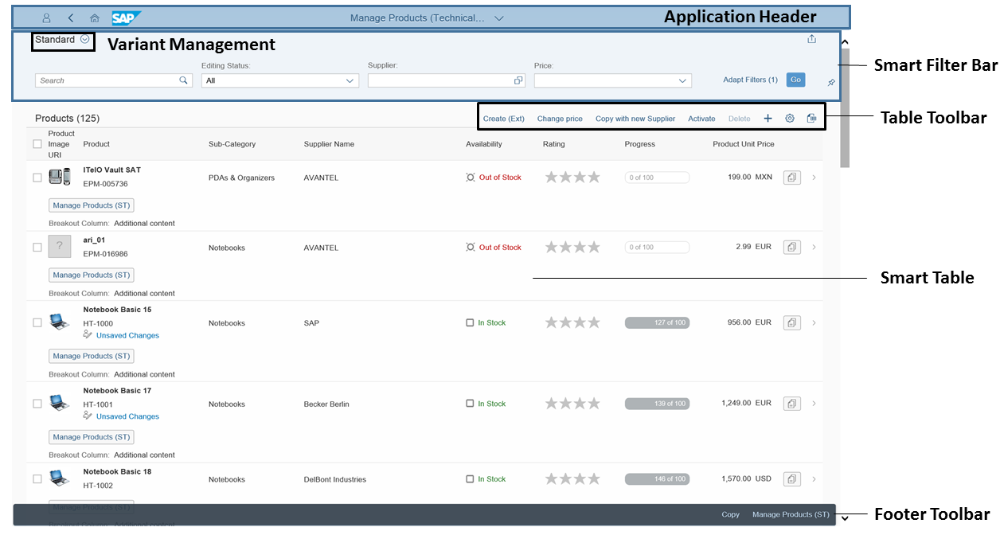

List Report Elements
The list report allows the user to work with a large list of items. It combines powerful functions for filtering large lists with different ways of displaying the resulting item list.
Example of a list report:
-
Application header
-
Smart filter bar with variant management and the generic Share menu that includes the following actions:By default, the smart filter bar is displayed, as shown above, when users launch an app. When choosing Go, the content of the list report is displayed.
-
Send Email
- Save as Tile
- Share in SAP Jam (if integration with SAP Jam is configured)
If users have set Execute on Select for their default variant, the content of the list report is displayed immediately upon launching the app, and the smart filter bar is collapsed.
-
-
Smart table
- Footer toolbar, which can include optional actions
More Information
For more information about the various functions of the list report view, see the following information:
- Social media integration (enabling the Share in SAP Jam option in the footer toolbar):
- Configuring List Report Features